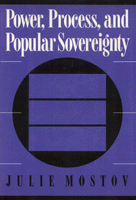

A "process-oriented" outline of the relationship of power on the process of social choice
A "process-oriented" outline of the relationship of power on the process of social choice


 A "process-oriented" outline of the relationship of power on the process of social choice
A "process-oriented" outline of the relationship of power on the process of social choice

|  |
Power, Process, and Popular SovereigntyJulie Mostovcloth EAN: 978-0-87722-970-4 (ISBN: 0-87722-970-8) |
"I found Julie Mostov's work exciting and instructive. She presents a fresh, insightful, forcefully argued, and scholarly documented thesis."
—Peter Bachrach, author of The Theory of Democratic Elitism
Combining arguments for maximum political participation and the guarantee of individual rights, Julie Mostov explores the relationship of power in the process of social choice. Outlining a "process-oriented" understanding of popular sovereignty, Mostov focuses on political and socio-economic rights as background conditions for free and equal public deliberation. She constructs a relational approach to popular rule and promotes the recognition that in democratic struggles the terms of political participation and the conditions for sharing in the exercise of sovereignty are far more important than the outcome of the struggle.
Mostov argues that the issue is not merely more participation but more equality in the process of ruling and being ruled. She cites examples of how background conditions can undermine popular demands and promote rule in the hands of the few. Her notion of popular sovereignty focuses on the ability of differently situated individuals to gather and use resources on equal footing with others and respects individuals as choosers who could make a difference.
Preface
1. Democracy: Can There Be Too Much?
2. Sovereignty in Bodin, Hobbes, and Rousseau
3. Sovereignty in the Lockean Tradition
4. The Tyranny of the Majority Reconsidered
5. Justifying Democracy
6. Practicing Democracy
7. Exercising Sovereignty: The Idea Applied
Notes
Index
Julie Mustov is Associate Professor of Politics at Drexel University.
Political Science and Public Policy
© 2015 Temple University. All Rights Reserved. This page: http://www.temple.edu/tempress/titles/883_reg.html.